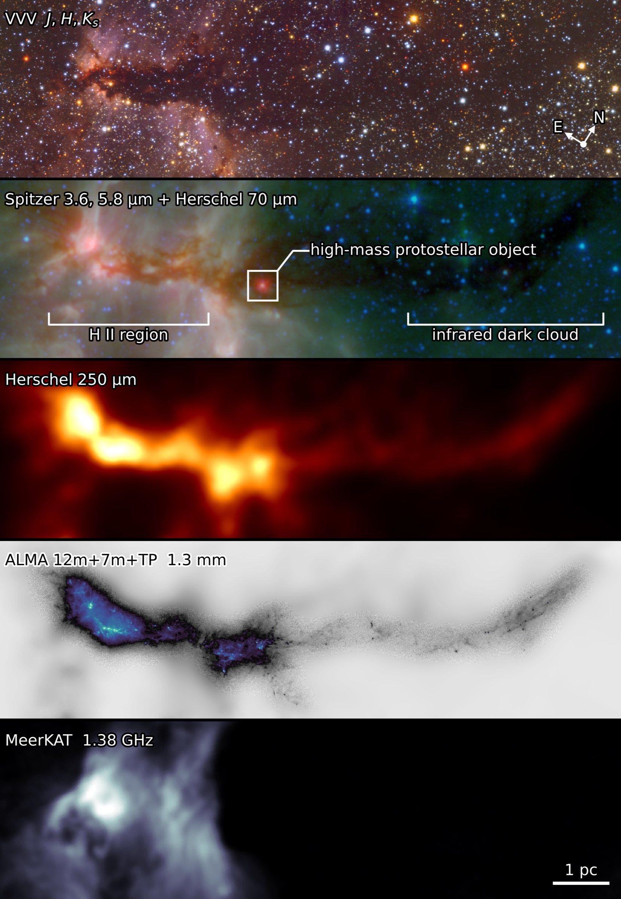

Where does the mass go?
Trace how material is concentrated from extended clouds into the dense structures that feed star formation.
Following the matter that builds massive stars and clusters, from a cloud’s faintest structures to its brightest beginnings.
Explore our observations ↗How does diffuse gas become a cluster of stars?
LANCET — Linear filament and nested cluster evolution tomography — investigates G316.8, a 14-parsec filament where neighbouring regions offer a view of different stages of star formation within a shared environment.
From an infrared dark cloud to an embedded massive young stellar object and an H II region, we follow how gas gathers, fragments, and forms dense structures.

Trace how material is concentrated from extended clouds into the dense structures that feed star formation.
Compare neighbouring regions at different evolutionary stages while limiting differences in distance and environment.
Combine observations sensitive to extended emission with high-resolution views of compact cores.